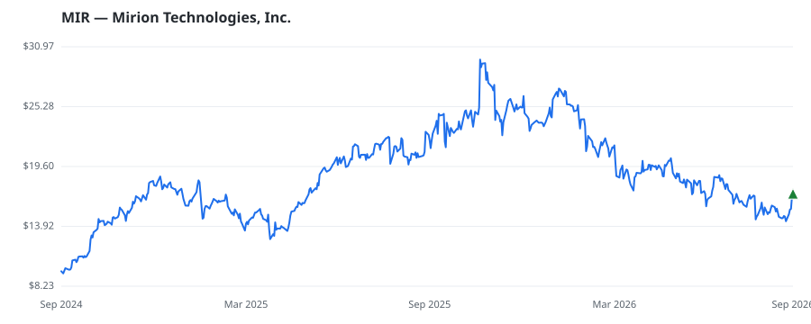

bullish · bearish · n/a — dots: price>SMA10 · SMA10>SMA50 · SMA50>SMA200 · up>down volume (20d)
Technology Hardware · mid cap · ★ 1 buyer(s) sit on a committee that regulates this industry
Members who bought MIR earned a dollar-weighted +0.0% from their disclosure dates, versus +0.0% for the S&P 500 over the same holding windows (+0.0% alpha).

▲ green = a disclosed purchase · ▼ red = a disclosed sale (plotted on disclosure date)
Mirion Technologies Inc provides products, services, and software that allow customers to safely leverage the power of ionizing radiation for applications that benefit the health, safety, vitality, and technological progress of the human experience. The Company manages its operations through two segments: Nuclear & Safety and Medical. The Medical segment improves the quality and safety of cancer care delivery and supports applications across medical diagnostics and practitioner safety. The Nuclear & Safety segment powers advancements in nuclear energy and critical radiation safety, measurement MEASURING & CONTROLLING DEVICES, NEC · website
| Revenue | $925.4M | Net income | $29.8M |
|---|---|---|---|
| Operating income | $51.5M | Diluted EPS | $0.11 |
| Assets | $3.6B | Equity | $1.9B |
| Member | Chamber | Out-performer | Disclosed buys $ | Return on buys |
|---|---|---|---|---|
| Rohit Khanna ★ | house | — | $32K | +0.0% |
Disclosed $ figures are bracket midpoints — filings report ranges (e.g. $1,001–$15,000), not exact amounts.
| Fund | Fund alpha vs SPY | Position | % of book |
|---|---|---|---|
| Chescapmanager LLC | +12% | $30M | 3.9% |
| ARDSLEY ADVISORY PARTNERS LP | +42% | $6M | 0.6% |
| Bastion Asset Management Inc. | +3% | $5M | 1.6% |
| Hollow Brook Wealth Management LLC | +6% | $4M | 0.8% |
Hedge data: SEC EDGAR 13F · ranked funds beat SPY in >50% of their quarters · fund alpha = mirror-portfolio return minus SPY.